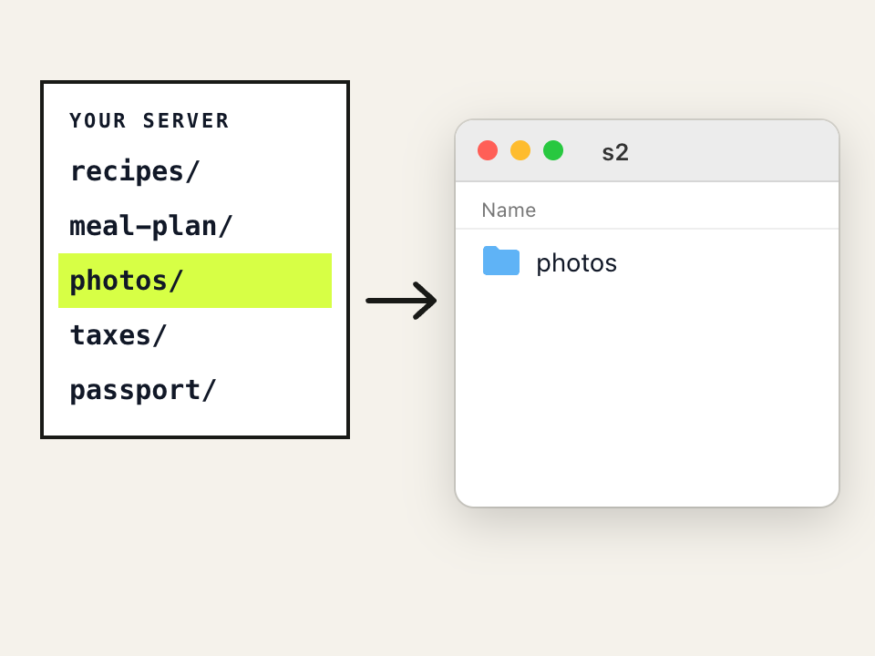
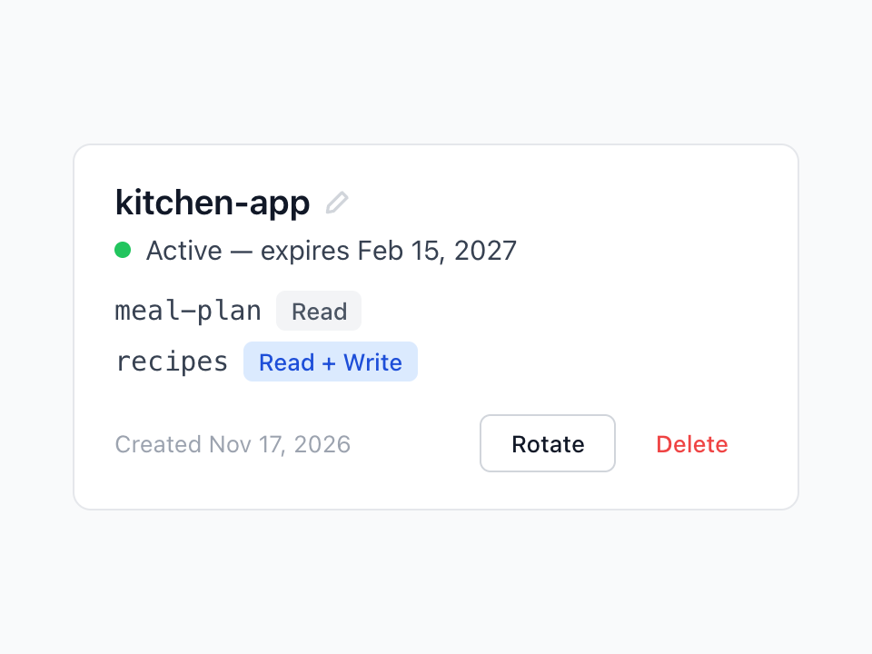

MCP
Claude, ChatGPT, any AI agent.
Self-hosted file storage
Pick the folders each person, app, and AI agent can open.

ReadRead + Write
Claude, ChatGPT, any AI agent.

Finder, Explorer, rclone.

Your scripts and apps.
MIT · Docker Compose · PostgreSQL
mkdir s2 && cd s2
curl -fsSLO https://raw.githubusercontent.com/hrs23/s2/main/compose.yaml
printf 'AUTH_SECRET=%s\nPOSTGRES_PASSWORD=%s\nAPP_URL=http://localhost:3000\n' \
"$(openssl rand -hex 32)" "$(openssl rand -hex 32)" > .env
docker compose up -d
docker compose exec app pnpm user create --email owner@example.com